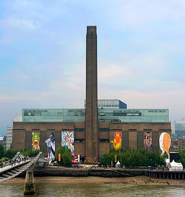
Tate Modern
Britain's national gallery of international modern art. It is the most-visited modern
art gallery in the world, with around 4.7 million visitors per year.
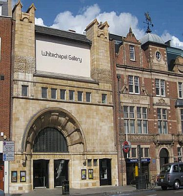
Whitechapel Gallery
Public funded gallery showcasing contemporary artists with a focus on the local community.
East London Graffiti Tour
A guide of East London’s vibrant street art scene including some of Banksy’s most famous pieces.
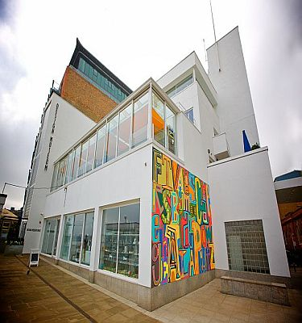
Design Museum
Product, industrial, graphic, fashion and architectural design alongside stunning views of the river.
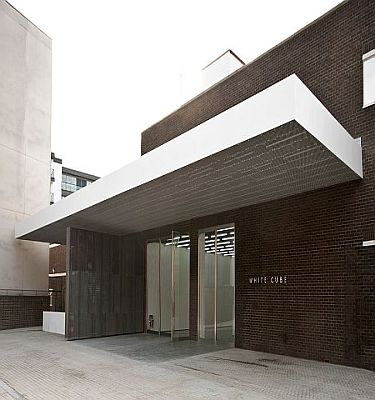
White Cube
Contemporary art gallery curating international artists including Damien Hurst.
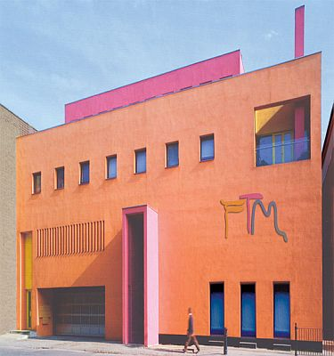
Fashion and Textiles Museum
Focuses on British and international fashion, and textile design from 1950 to the present day.
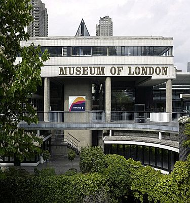
Museum of London
A history of London and its' people from prehistoric to the present day.
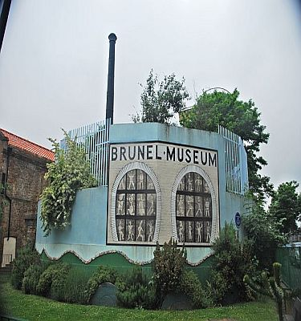
Brunel Museum
A museum in the Brunel Engine House, designed by Sir Marc Isambard Brunel to be part of the infrastructure of the Thames Tunnel.
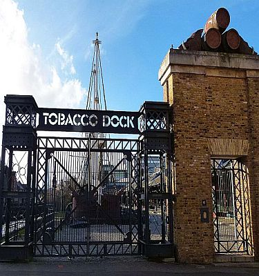
Tobacco Dock
Built in the early 19th Century as a secure bonded warehouse for the receipt and storage of tobacco from the New World.
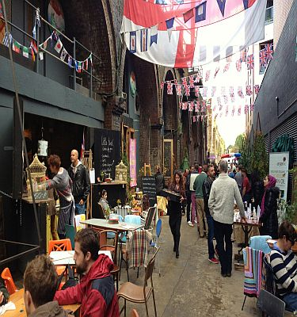
Maltby Market
Artisanal foodstuffs, baked goods, fresh meats and vegetables on offer from bustling market stalls.
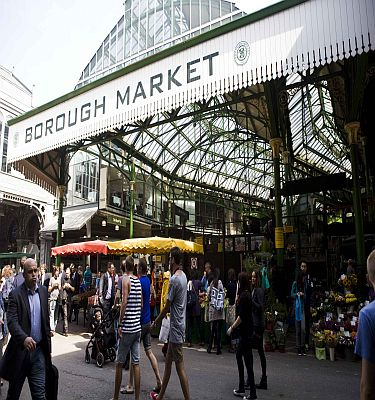
Borough Market
Wholesale and retail food market, one of the largest and oldest food markets in London, selling a large variety of foods from all over the world.
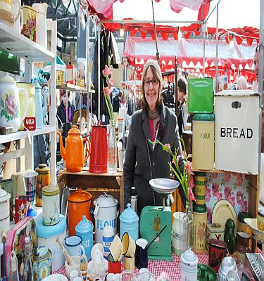
Spitalfields Market
A famous traditional market full of independent designers and handmade items as well as the latest street food trends.
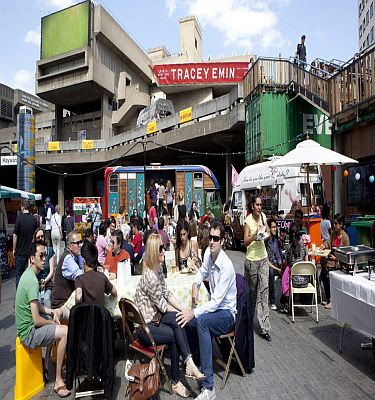
Southbank Market
Market with around 40 producers who rear, grow and produce their own high quality artisanal produce.

Brick Lane
Food, clothes and bric and brac for hipsters in the heart of London’s Bangladeshi community.

Exmouth Market
Outdoor street market alongside some of London's finest restaurants.
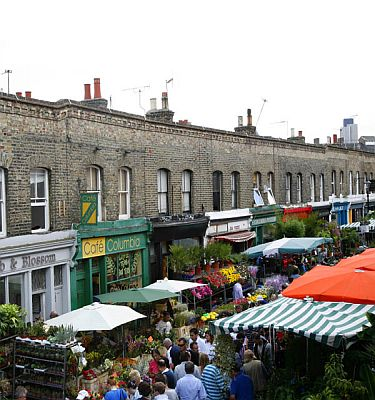
Columbia Road Market
London famous Sunday markets dating from the Victorian times specialising in flower selling
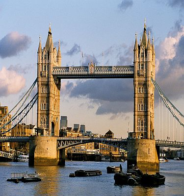
Tower Bridge
Finished in 1894 Tower Bridge is one of the most fascinating and iconic bascule and suspension
bridges in the world. The walkways, offer wonderful views along the River Thames and over the City.
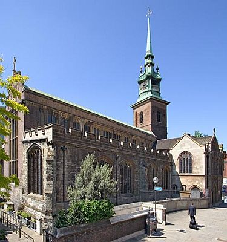
All Hallows Church
All Hallows by the Tower is the oldest church in the City of London and was founded by the Abbey of Barking in 675AD,
300 years before the Tower of London.
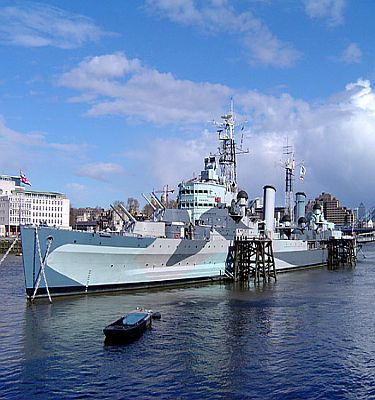
HMS Belfast
HMS Belfast is a museum ship, originally a Royal Navy light cruiser, permanently moored on the
River Thames and operated by the Imperial War Museum.
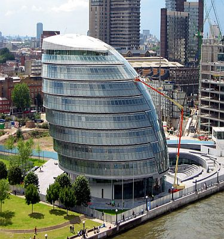
City Hall
City Hall is the headquarters of the Greater London Authority, which comprises the Mayor of London and the
London Assembly. It is located on the south bank of the River Thames overlooking Tower Bridge.

The Shard
The View from The Shard is atop the 87-storey skyscraper at 309 metres (1,014 ft) high,
it's is currently the tallest building in the European Union.
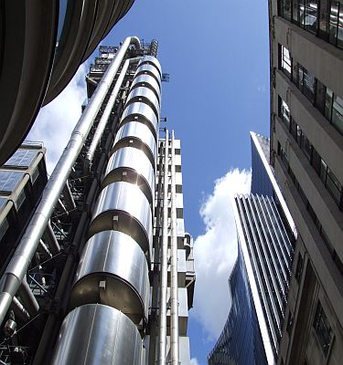
Lloyds of London
The Lloyd's building, designed by Richard Rogers 1986, is the home of the insurance
institution Lloyd's of London. It is located in London's main financial district.
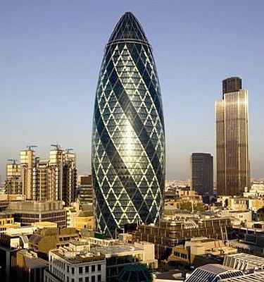
The Gherkin
30 St Mary Axe is a commercial skyscraper in London's primary financial district.
Opened in April 2004 with 41 stories, it is 180 metres (591 ft) tall

Monument
The Monument to the Great Fire of London, more commonly known simply as the
Monument, is a fluted Doric column in the City of London finished 1677
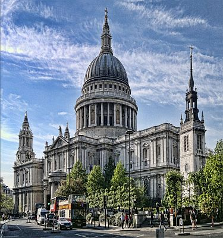
St. Pauls
The present church and famous dome that dominates the sky line date from the
late 17th century, was designed in the English Baroque style by Sir Christopher Wren.
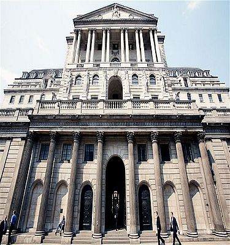
Bank of England
The second oldest central bank in the world and the model on which most modern
central banks have been based. Established in 1694.
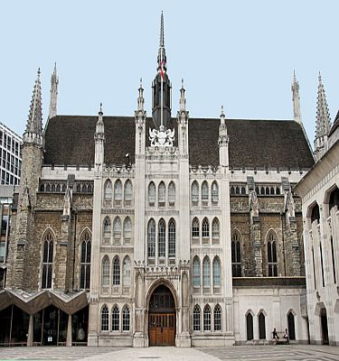
Guild Hall
In the United Kingdom, a guildhall is usually a town hall. A suggested etymology is from
the Anglo Saxon "gild", or "payment", the guildhall being where citizens came to pay their rates.